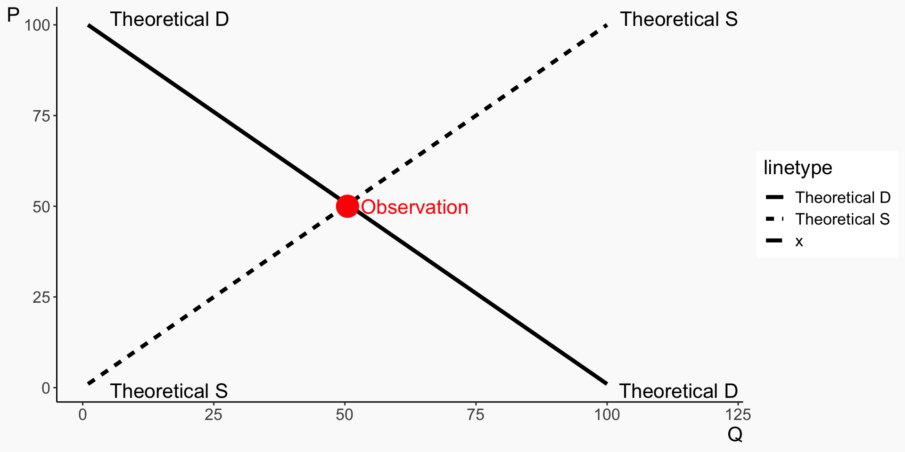

🗓️ Week 2
Fitting Lines
03 Oct 2023
Identification Error
- What is identification error?
- Identification is how you link the result you see with the conclusion you draw from it
- For example, say you observe that kids who play video games are more aggressive in everyday life (result), and you conclude from that result that video games make kids more aggressive (conclusion)
- If seeing that result is actually evidence for that conclusion, then we are properly identified
Identification Error
- Another reason why we might see that result, i.e. if the same result could give us a different conclusion, like kids who are aggressive play more video games or people notice aggression more when kids play video games, then
- we have made an identification error* - our result was not identified!*
- Identification error is when your result in the data doesn’t actually have a clear theory (“why” or “because”)
- For example, if you observe that people tend to wear more shorts on days they eat more ice cream, and you conclude that eating ice cream makes you put on shorts
Data Generating Process
- To avoid identification error, economists think closely about the data generating process
- What is a data generating process?
- The data generating process is the true set of laws that determine where our data comes from
- For example, if you hold a rock and drop it, it falls to the floor
- What is the data we observe? (Hold the rock & Rock is up) and (Let go & Rock is down)
- What is the data generating process? Gravity makes the rock fall down when you drop it
Data Generating Process
- Another example is a model of supply and demand
- We observe prices and quantities in a competitive market
- What led to those being the prices and quantities we see?
- The supply and demand model and its equilibrium, we theorize!
Data Generating Process
Data Generating Process
- The prices that we observe come from that theoretical construct
- When we see the prices and quantities moving, according to our theory, it is because the S and D lines are moving
- But we cannot see the S and D lines
- Our goal: use the observations we do see to infer what the theoretical model (data generating process) is
Data Generating Process
- Harder than it sounds. What inference about S and D can we draw from these observations?
Causality
- A data generating process can be described by a series of equations that describe where the data comes from. For example:
\[ X = \gamma_0 + \gamma_1\varepsilon + \nu \]
\[ Y = \beta_0 + \beta_1X + \varepsilon \]
- This says ” \(X\) is caused by \(\varepsilon\) and \(\nu\), and \(Y\) is caused by \(X\) and \(\varepsilon\)”
- The truth is that an increase in \(X\) causally increases \(Y\) by \(\beta_1\)
- The goal of econometrics is to be able to estimate what \(\beta_1\) is accurately
Causality
- We can also represent this set of relationships as a graph, with arrows telling you what variables cause each other

Causality
- We do this because most of the relationships we’re interested in are causal - we want to know, if we could reach in and manipulate \(X\), would \(Y\) change as a result, and how much?
- Does the minimum wage reduce employment?
- Does quantitative easing avert recessions?
- Does six-sigma improve business performance?
- Does getting an MBA make you a better manager?
Regressions
- In statistics, regression is the practice of line-fitting
- We want to use one variable to predict another
- Let’s say using \(X\) to predict \(Y\)
- We’d refer to \(X\) as the “independent variable”, and \(Y\) as the “dependent variable” (dependent on \(X\) that is)
- Regression is the idea that we should characterize the relationship between \(X\) and \(Y\) as a line, and use that line to predict \(Y\)
\(X\) and \(Y\)
- I have an \(X\) value of 2.5 and want to predict what \(Y\) will be. What can I do?
\(X\) and \(Y\)
- I can’t just say “just predict whatever values of \(Y\) we see for \(X = 2.5\), because there are multiple of those!
- Plus, what if we want to predict for a value we DON’T have any actual observations of, like \(X = 4.3\)?
Data is Granular
- If I try to fit every point, I’ll get a mess that won’t really tell me the relationship between \(X\) and \(Y\)
- So, we simplify the relationship into a shape: a line! The line smooths out those three points around 2.5 and fills in that gap around 4.3
Isn’t This Worse?
- By adding a line, we are necessarily simplifying our presentation of the data. We’re tossing out information!
- Our prediction of the data we have will be less accurate than if we just make predictions point-by-point
- However, we’ll do a better job predicting other data (avoiding “overfitting”)
- And, since a shape is something we can interpret, as opposed to a long list of predictions, which we can’t really, the line will do a better job of telling us about the true underlying relationship
The Line Does a Few Things:
- We can get a prediction of \(Y\) for a given value of \(X\) (If we follow \(X = 2.5\) up to our line we get \(Y = 7.6\))
- We see the relationship: the line slopes up, telling us that “more \(X\) means more \(Y\) too!”
Lines
- That line we get is the fit of our model
- A model “fit” means we’ve taken a shape (our line) and picked the one that best fits our data
- All forms of regression do this
- Ordinary least squares specifically uses a straight line as its shape
- The resulting line we get can also be written out as an actual line, i.e.
\[ Y = intercept + slope*X \]
Lines
- We can use that line as… a line!
- If we plug in a value of \(X\), we get a prediction for \(Y\)
- Because these \(Y\) values are predictions, we’ll give them a hat \(\hat{Y}\)
\[ Y = 3 + 4*X \]
\[ \hat{Y} = 3 + 4*(3.2) \]
\[ \hat{Y} = 15.8 \]
Lines
- We can also use it to explain the relationship
- Whatever the intercept is, that’s what we predict for \(Y\) when \(X = 0\)
\[ Y = 3 + 4*X \]
\[ \hat{Y} = 3 + 4*0 \]
\[ \hat{Y} = 3 \]
Lines
- And as \(X\) increases, we know how much we expect \(Y\) to increase because of the slope
\[ Y = 3 + 4*X \]
\[ \hat{Y} = 3 + 4*3 = 15 \]
\[ \hat{Y} = 3 + 4*4 = 19 \]
- When \(X\) increases by \(1\), \(Y\) increases by the slope (which is \(4\) here)
Ordinary Least Squares
- Regression fits a shape to the data
- Ordinary least squares specifically fits a straight line to the data
- The straight line is described using an \(intercept\) and a \(slope\)
- When we plug an \(X\) into the line, we get a prediction for \(Y\), which we call \(\hat{Y}\)
- When \(X = 0\), we predict \(\hat{Y} = intercept\)
- When \(X\) increases by \(1\), our prediction of \(Y\) increases by the \(slope\)
- If \(slope > 0\), \(X\) and \(Y\) are positively related/correlated
- If \(slope < 0\), \(X\) and \(Y\) are negatively related/correlated
Concept Checks
- How does producing a line let us use \(X\) to predict \(Y\)?
- If our line is \(Y = 5 - 2*X\), explain what the \(-2\) means in a sentence
- Not all of the points are exactly on the line, meaning some of our predictions will be wrong! Should we be concerned? Why or why not?
How?
- We know that regression fits a line
- But how does it do that exactly?
- It picks the line that produces the smallest squares
- Thus, “ordinary least squares”
Predictions and Residuals
- Whenever you make a prediction of any kind, you rarely get it exactly right
- The difference between your prediction and the actual data is the residual
\[ Y = 3 + 4*X \]
If we have a data point where \(X = 4\) and \(Y = 18\), then
\[ \hat{Y} = 3 + 4*4 = 19 \]
Then the residual is \(Y - \hat{Y} = 18 - 19 = -1\).
Predictions and Residuals
So really, our relationship doesn’t look like this…
\[ Y = intercept + slope*X \]
Instead, it’s…
\[ Y = intercept + slope*X + residual \]
We still use \(intercept + slope*X\) to predict \(Y\) though, so this is also
\[ Y = \hat{Y} + residual \]
Ordinary Least Squares
- As you’d guess, a good prediction should make the residuals as small as possible
- We want to pick a line to do that
- And in particular, we’re going to square those residuals, so the really-big residuals count even more. We really don’t want to have points that are super far away from the line!
- Then, we pick a line to minimize those squared residuals (“least squares”)
Ordinary Least Squares
- Start with our data
Ordinary Least Squares
- Let’s just pick a line at random, not necessarily from OLS
Ordinary Least Squares
- The vertical distance from point to line is the residual
Ordinary Least Squares
- Now square those residuals
Ordinary Least Squares
- Can we get the total area in the squares smaller with a different line?
Ordinary Least Squares
- Ordinary Least Squares, I can promise you, gets it the smallest
Ordinary Least Squares
- How does it figure out which line makes the smallest squares?
- There’s a mathematical formula for that!
- First, instead of thinking of \(intercept\) and \(slope\), we reframe the line as having parameters we can pick
\[ Y = intercept + slope*X + residual \]
\[ Y = \beta_0 + \beta_1X + \varepsilon \]
Terminology Sidenote
\[ Y = \beta_0 + \beta_1X + \varepsilon \]
- In metrics, Greek letters represent “the truth” - in the true process by which the data is generated, a one-unit increase in \(X\) is related to a \(\beta_1\) increase in \(Y\)
- When we put a hat on anything, that is our prediction or estimation of that true thing. \(\hat{Y}\) is our prediction of \(Y\), and \(\hat{\beta_1}\) is our estimate of what we think the true \(\beta_1\) is
- Note “residual” =/= \(\varepsilon\) - residuals are what’s actually left over from our prediction with real data, but the error \(\varepsilon\) is the true difference between our line and \(Y\).
OLS Simulator
- Take a look at this OLS simulator and play around with it: https://econometricsbysimulation.shinyapps.io/OLS-App/
- Click “Show Residuals” to turn that on
- Try different data generating processes and standard deviations
- What settings make the residuals small or large? Any guesses why?
- What happens if you take the intercept out? What does that make our line do?
- How close does the line come to the data generating process? Intercept and slope are in the second table below the graph under “Estimate”
Concept Checks
- Why might we want to minimize squared residuals rather than just residuals?
- What’s the difference between a residual and an error?
- If I have the below OLS-fitted line from a dataset of children:
\[ Height (Inches) = 18 + 2*Age\]
And we have the kids Darryl who is 10 years old and 40 inches tall, and Bijetri who is 9 years old and 37 inches tall, what are each of their: (a) predicted values, (b) residuals, and then what is the sum of their squared residuals?
Recap
- Regression is the practice of fitting a shape to data so as to explain the relationship more generally
- Ordinary least squares fits a straight line
- It picks the straight line that minimizes the sum of squared residuals
- That line has an intercept \(\beta_0\) (Our prediction \(\hat{Y}\) when \(X = 0\)) and a slope \(\beta_1\) (how much higher we predict \(Y\) will be when we look at an \(X\) one unit higher)
- The residual is the difference between our prediction \(\hat{Y} = \hat{\beta}_0 + \hat{\beta}_1X\) and the actual number \(Y\)
\[ Y = \beta_0 + \beta_1 X + \varepsilon \] \[ \hat{Y} = \hat{\beta}_0 + \hat{\beta}_1X \]

PB4A7- Quantitative Applications for Behavioural Science